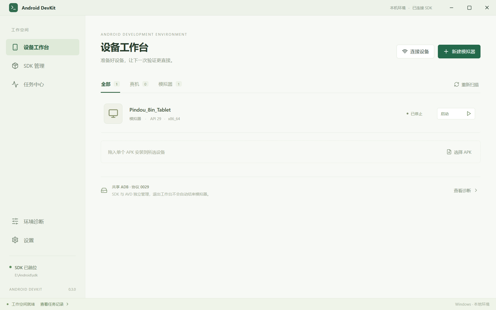
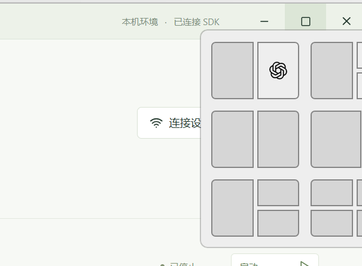
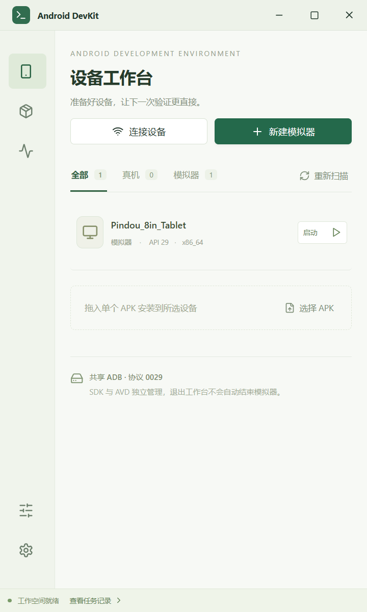

M3 实现与验证报告
版本 0.3.0 · Tauri 2 + React / TypeScript + Rust · Windows 11 x64
M0—M3 功能已实现 本机闭环验证通过 默认 SDK：E:\Android\sdk
记录时间：2026-10-18 01:10:08 +08:00（北京时间）依据 PRD v0.6 与 Tauri 技术方案 完成至 M3 的代码实现、Release 构建和本机验证。现有 SDK、用户既有 Pindou_8in_Tablet AVD 与共享系统镜像保留；破坏性测试仅使用独立创建的一次性 AVD。
验收边界：当前没有实体手机参与成功无线配对验收。已验证真实 ADB 的失败路径、连接未就绪判断和配对码不持久化，不能据此声称真机成功链已通过。跨显示器混合 DPI、全新普通 Windows 用户、多物理设备及完整恢复故障矩阵仍需补充验证。本报告不代表 PRD 全部 P0 或 M4 发布验收完成。
1. 交付与运行
本机可执行程序
AndroidDevKit.exe · Release · 14.96 MiB
双击运行，默认复用 E:\Android\sdk。需要 WebView2 Runtime。程序未签名，当前没有安装器。
SHA256 6368b1a27b9b944367826ab8e3998de473dfac2fef2d36a24784decec79e6186
2. 实现范围
| 阶段 | 已实现能力 | 主要实现 |
|---|---|---|
| M0 | 自绘标题栏、Windows Snap 原生最大化命中区、150% DPI；进程参数数组执行、stdout / stderr 同时排空；工具版本与空环境验证。 | platform.rs / process.rs / resources |
| M1 | Rust DTO 生成 TS 类型、受限 IPC、SQLite 任务 / 审计、资源锁；SDK、AVD、USB / 无线会话发现；冻结目标的 APK 安装与应用启动，PNG 截图、基础 Logcat 环形缓冲。 | domain.rs / contracts.rs / storage.rs / app.rs / apk.rs / observe.rs |
| M2 | 最小用途引导、许可确认、私有 Java；官方稳定仓库目录、组件计划与逐项安装卸载；依赖最低版本及显式升级范围；代理、校验、暂存解压、占用拦截和实际清单复查。 | bootstrap.rs / dependencies.rs / plans.rs / engine.rs |
| M3 | Pixel 2 手机 / Nexus 9 平板创建；显示名、内存与 GPU 配置编辑；启动就绪、打开窗口、冷启动、正常 / 强制停止、清数据、删除；无线配对、手动连接与断开。 | android.rs / engine.rs / platform.rs / App.tsx |

3. 已执行的验证
| 验证项 | 结果及范围 | 证据 |
|---|---|---|
| 静态检查 / 常规测试 | TypeScript、Vite 构建与 Clippy -D warnings 通过。Rust 17 项通过、4 项显式忽略；忽略项为类型生成和 3 类真实集成测试，下列集成测试另行执行。Rust / TS 契约无漂移。 | pnpm check / pnpm test |
| M2 空 SDK + 空 Java | 64.41 秒；官方目录 → 固定 Command Tools → 校验 / 解压 → 私有 JRE21 → 官方许可 stdin → platform-tools / emulator 安装与清单复查。缺少许可同意时拒绝执行。仅在隔离目录下载，不改 E 盘 SDK。 | .qa/runtime/m2-1792256647/acceptance.json |
| M3 真实生命周期 | 127.69 秒，16 个任务全部成功。手机创建 / 编辑 / 启动 → 截图 → fixture APK 安装 / 启动 → 正常停止 → 冷启动 → 停止 → 清数据并停止 → 删除；平板创建 / 启动 / 打开窗口 / 强停 / 删除。共享系统镜像仍存在。 | .qa/runtime/m3-1792256636/acceptance.json |
| 无线失败与秘密处理 | 真实 E 盘 adb 访问 localhost:9；配对返回 PAIR_FAILED，连接返回 CONNECT_NOT_READY；任务对象及序列化内容均无配对码。未测试外部手机成功配对。 | pnpm verify:wireless |
| 桌面界面 | 现有 AVD、485 条组件目录可见；非法 AVD 名称 / IP 被拒绝；仓库刷新无警告；诊断、设置路径正常；无前端异常。 | .qa/app/report.json |
| 紧凑与窗口 | 960 / 640 / 480 宽及窄屏向导无页面横向溢出；最大化 / 还原切换成功；150% DPI 命中 HTMAXBUTTON=9；原生贴靠浮层实际出现，截图人工复核通过。 | .qa/app/compact-report.json / window-report.json |


查看测试模拟器产生的 PNG 截图
4. 已验证工具组合
| 环境 | 组合 | 验证深度 |
|---|---|---|
| 现有 E 盘 SDK | Command Tools 22.0；platform-tools 36.0.0 / ADB 协议 41；emulator 36.1.6；JBR 21.0.6；AOSP Android 29 x86_64。 | 手机 / 平板 AVD 生命周期、APK 安装启动、截图；WHPX 加速实际可用。 |
| 隔离空 SDK | Command Tools 22.0；Temurin JRE 21.0.12.1+1-LTS；platform-tools 37.0.1；emulator 37.2.12。 | 下载、校验、解压、许可、安装和工具发现。未用该组合执行 AVD 启动。 |
| 开发构建 | Node 24.14.0；pnpm 11.25.0；Rust 1.95.0；Tauri Rust 2.12.4 / CLI 2.12.3；Vite 7.3.7。 | 精确依赖解析由两个 lockfile 保存，Rust toolchain 固定。 |
完整元数据见 toolchain.json；引导归档校验值与完整 Java 许可分别保存在 bootstrap.json 和 java-license.txt。
5. 关键边界与实施调整
- 设备目标：每次有目标的写操作绑定 epoch + transport ID + serial，并在执行步骤重新核对；断线或会话改变即停止，不改投其他设备。兼容性检查前通过 ADB host socket 只读探测服务，重启共享服务须单独明确确认。
- SDK 变更：依赖最低版本进入计划；版本替换明确展示，不使用全局 update。已有镜像在创建 AVD 时保留当前版本；执行后版本与计划不同标记待检查。运行中模拟器及已知 AVD 引用阻止不安全组件替换 / 卸载。
- AVD 数据：新建采用独立暂存与提交日志，不覆盖同名 AVD；编辑保留未知字段并检测外部冲突。删除 / 重置检查路径、注册配置、共享目录和重解析点。清数据包含独立 SD 卡与快照，完成后回到停止。
- 进程：强停绑定应用记录的 PID、创建时间和可执行路径，拒绝无法证明归属的外部进程；停止后复查占用。打开窗口也核对进程身份。
- 任务恢复：SQLite WAL 保存任务与审计；中断任务变为待检查，复查可证明的实际结果；不自动重放安装、卸载、配对或清数据。
- 方案调整：DTO 生成采用已验证的 ts-rs；最小窗口宽从建议 960 调为 480，配合紧凑布局以支持常见 Snap 分区；传统工具固定 Command Tools 22.0，新 Android CLI 迁移留待独立兼容验证。
6. 待补充验收与 M4
开发实现已覆盖 M3；以下证据与发布工作没有被本机模拟器测试替代：
- 实体 Android 手机成功配对、连接、断开与重连；两台物理设备同时在线、USB 授权变化及切网情形。
- 100%—200% DPI、跨显示器混合 DPI 与各贴靠布局完整矩阵；全新普通 Windows 用户机器上的零环境引导。
- M4：正式 Logcat PID / 应用过滤与长采集、隐私导出、关闭 / 托盘体验、完整恢复故障注入和性能基线。
- M4：签名安装器、依赖许可清单与发布更新；其他 API / Google Play 镜像组合需要追加兼容验证。
7. 复现命令
pnpm install --frozen-lockfile pnpm check pnpm test pnpm verify:m3 pnpm verify:m2 pnpm verify:wireless pnpm tauri build --no-bundle powershell -NoProfile -File scripts/package-portable.ps1
桌面运行：pnpm tauri dev。浏览器 pnpm dev 只用于界面预览。真实验收脚本会下载官方文件或创建自行管理的一次性 AVD，执行范围详见 README。